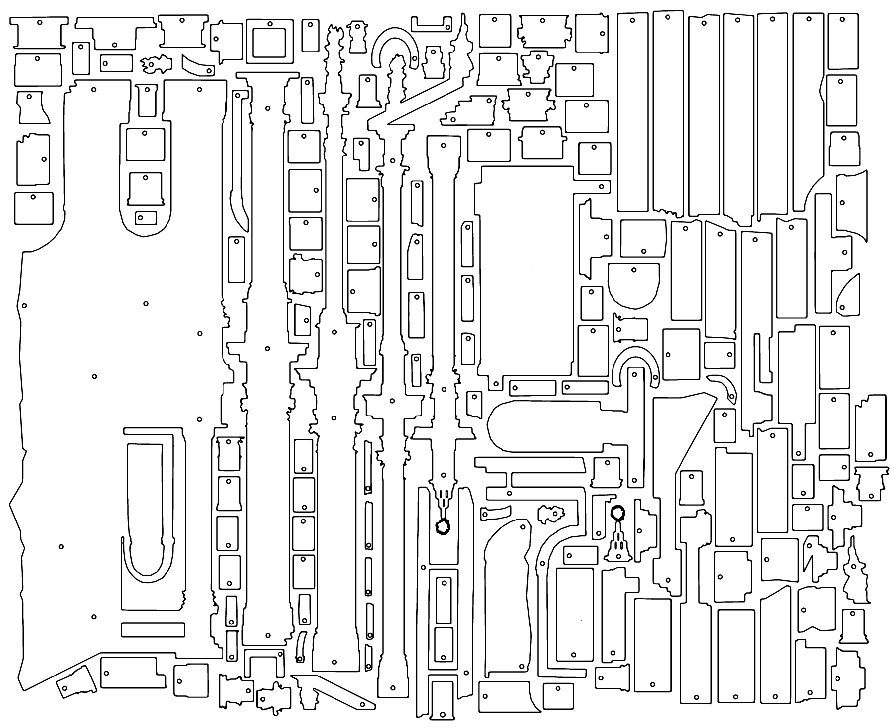
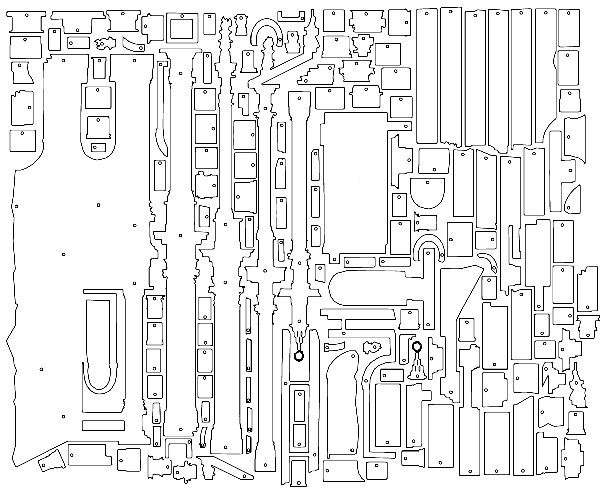
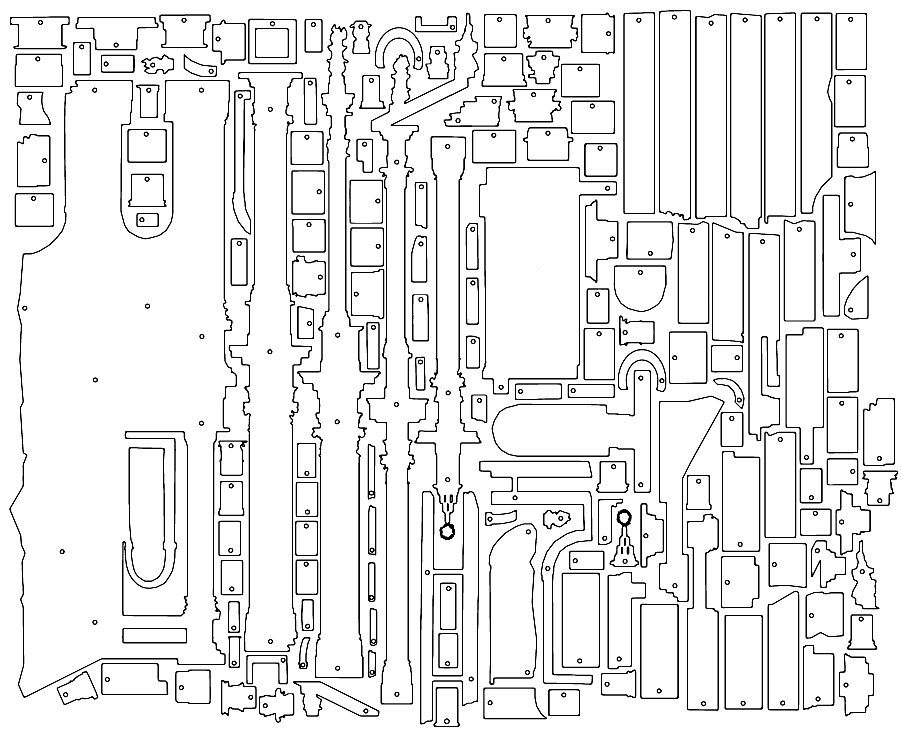

Mutabilia
I’ve always been fascinated by the monumentality of Rome and the proverbial belief that the city will endure until the end of time. I have never understood how one could relate to the idea of eternity and statuesque beauty without questioning how permanency is pretty much a construct.
Marguerite Yourcenar, giving voice to the emperor Hadrian reflecting on his legacy, introduces a more dynamic perspective, clashing with this perpetual/fixed imagery surrounding the city, and shifting the focus from the visible to the invisible, from the definitive to the dubious.
“Other Romes will come, whose forms I see but dimly [...]”
I was given the opportunity to occupy Sala Santa Rita for two weeks, and even though I don’t usally explore these kind of topics throught my practice, I really wanted to scratch this itch.
The space, which was a church until recently, due to a remodultion of the urban plan between Piazza Venezia and Via del Mare, was dismantled in 1928, and only 10 years later rebuilt in a different location.
I believe this episode to be paradigmatic both from a urbanistic perspective, and somehow to the way we relate to our own heritage.
I’ve 3D-modeled the church and animated the model to perform a migration from a location to another, from a screen to the other. Alongside the animation, I’ve exhibited the facade fragmented in pieced, made out of laser-cut plexiglass.
The finissage was soundtracked by Giuseppe Landro a.k.a Primitive in The Extreme.
